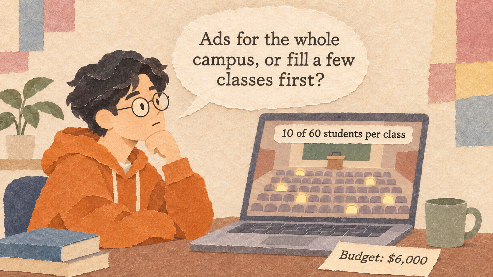
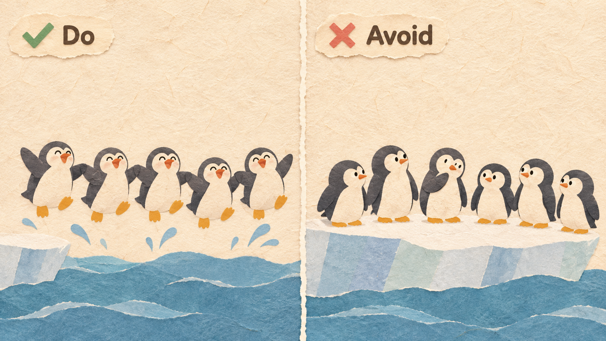
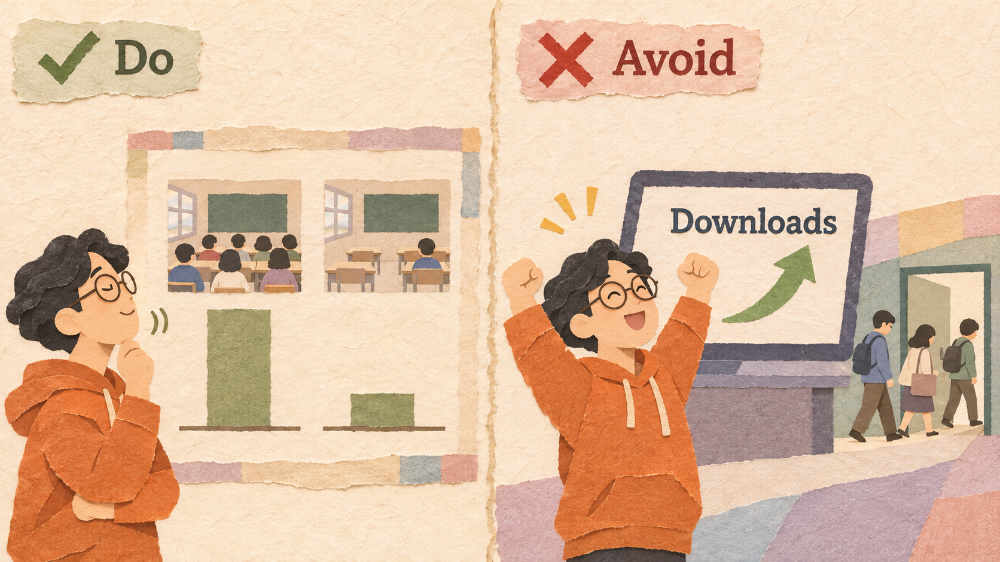

ClassChat is Tomás's free app where students in the same class chat, share notes, and ask questions before exams. Users are spread over 300 classes, so most students open an almost empty class and leave.
| CLASSCHAT (THIS SEMESTER) | VALUE |
|---|---|
| Users / classes with at least one user | 3,000 / 300 |
| Students in a typical class / users in it | 60 / 10 |
| Weekly active rate, classes with 30 or more users | 80% |
| Weekly active rate, classes with fewer than 30 users | 15% |
| Money to spend on growth | $6,000 |
Some products become more useful for each user when more people use them: a chat app is useless if none of your friends use it. Nobody wants to join first, and an almost empty product loses its first users. So you fill one small group first until it is clearly useful there, give early users a reason to stay, help people join together, and check with data that each new user really makes the product better. Then you move to the next group.
A product feels alive when a group is full, not when many groups each have a few users.
ClassChat spends its budget on 40 first-year business classes, so most students there join at once.
Advertising to the whole campus. Users are spread thin, no class feels alive, and new users leave.
Early users join an almost empty product. Give them a reason to stay until their friends arrive.
ClassChat organizes each student's own timetable and notes, so it is useful from the first day.
A product that is useless until friends arrive. The first users delete it before friends come.
People join when they see others join. Bring a whole group in at the same moment.

A class ambassador asks everyone to join in the first lecture, so 40 students join on the same day.
Letting people join one by one, or limiting invitations so friends cannot get in.
Do not count downloads only. Measure whether fuller groups are more active.

80% weekly active where 30 or more students joined; 15% where fewer joined. The effect is real.
Celebrating downloads. Many people install the app once and never come back.
Facebook started on February 4, 2004, open only to Harvard students. A month later it opened to just three more universities (Columbia, Stanford, and Yale), then to other universities one by one, before opening to everyone in 2006.
Around 2006, two movie-disc formats competed: Blu-ray (Sony) and HD DVD (Toshiba). Buyers and film studios waited to see which would win. Sony put a Blu-ray player inside every PS3. About 10.5 million PS3s were sold by early 2008, Warner Bros. chose Blu-ray only, and in February 2008 Toshiba stopped making HD DVD.
Google Wave was a tool for writing and chatting together online. In September 2009, Google opened it to about 100,000 invited users. Most could not invite their friends or coworkers, and many did not understand what to use it for. In August 2010, Google stopped developing it.
Clubhouse is an app for live audio conversations. It grew very fast in early 2021 and had about 14 million downloads by mid-April 2021. But many users found few good live rooms, other apps added live audio, and use fell sharply. In April 2023, Clubhouse cut more than half of its staff.
| EXAMPLE | RESULT | THE RULE THAT DECIDED IT |
|---|---|---|
| Good | One campus at a time (Rule 1) | |
| PS3 and Blu-ray | Good | Millions joined together (Rule 3) |
| Google Wave | Bad | Friends could not get in (Rule 3) |
| Clubhouse | Bad | Counted downloads, not return visits (Rule 4) |
Density = users in the group / people in the group x 100
Weekly active rate = weekly active users / all users x 100
Cost per new user = money spent / new users
What you give up to get something you value more.
A promise, written before you start, about which result would make you change your decision.
Example: "If fewer than 30 students in a class join by week 3, we will stop spending in that class."
Six products:
| PRODUCT | ANSWER | WHY |
|---|---|---|
| (a) Messaging app | Network effect | More people you can message |
| (b) Calculator | No | Works the same alone |
| (c) Online game | Network effect | More players, faster matches |
| (d) Flashlight | No | Works the same alone |
| (e) Language exchange | Network effect | More partners for each language |
| (f) Photo editor | No | Works the same for each user |
| GYM | MEMBERS | GYMBUDDY USERS | WEEKLY ACTIVE |
|---|---|---|---|
| A | 400 | 40 | 6 |
| B | 500 | 200 | 150 |
| C | 300 | 150 | 105 |
| D | 600 | 60 | 9 |
| E | 200 | 30 | 6 |
| GYM | DENSITY | WEEKLY ACTIVE RATE | USERS NEEDED FOR 40% |
|---|---|---|---|
| A | 10% | 15% | 120 |
| B | 40% | 75% | - |
| C | 50% | 70% | - |
| D | 10% | 15% | 180 |
| E | 15% | 20% | 50 |
300 classes of 60 / about 10 users each / 80% active at 30+ users, 15% below / both options: $6,000, 1,500 new users
The 1,500 new users spread evenly over all 300 classes.
$100 ambassador in each of 40 first-year business classes ($4,000) and a launch event ($2,000).
All 1,500 join in those 40 classes, which now have 400 users.
Explain network effects, critical mass, and the penguin problem.
Measure density and weekly activity to find critical mass.
Compare "spread wide" with "fill one group first" and write a decision rule.
Katz, M. L., & Shapiro, C. (1985). Network externalities, competition, and compatibility. American Economic Review, 75(3).
Farrell, J., & Saloner, G. (1986). Installed base and compatibility. American Economic Review, 76(5).
Harvard Magazine (2019). How Facebook escaped Harvard.
The Japan Times (2008, February 20). It's official: Toshiba pulls plug on HD DVD.
eWeek (2010). Google cancels Wave. CNBC (2023, April 27). Clubhouse layoffs.